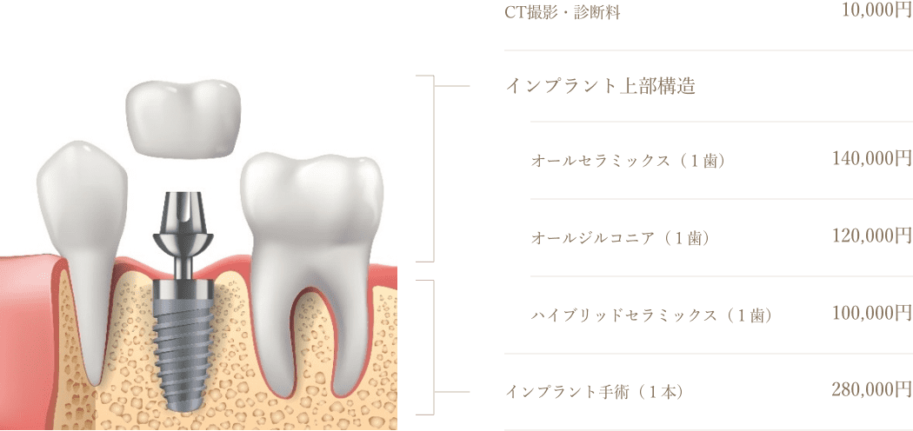

インプラントとは、人工の材質や部品を体に入れ込むことの総称です。
歯科では、歯を失った部位の顎骨に「チタンのネジ」を埋め込んで「人工の歯の根っこ」とし、
その上に人工の歯を取り付けることで、失った歯の機能を回復してあげる治療となります
「第二の永久歯」と呼ばれるほどの治療です
一本のを失った方から数本の歯を失ってしまった方、
すべての歯を失ってしまった方や失いそうになっている方
すべての方にインプラント治療が可能です。
01
１歯～数本の歯を失った症例
歯を失ってしまった場合、保険治療ではブリッジもしくは義歯という方法があります。ブリッジや義歯では、残っている歯に負担をかけるため、長期的には更に歯を失うリスクになる場合があります。また、ブリッジや義歯では解決できない審美性・違和感・噛み心地などをインプラントでは改善することが可能です。
インプラント

メリット
デメリット
噛む力
◎
審美性
◎
耐久性
◎
ブリッジ

メリット
デメリット
噛む力
◯
審美性
◯
耐久性
△
入れ歯

メリット
デメリット
噛む力
△
審美性
△
耐久性
△
02
総入れ歯・総入れ歯になりそうな症例
すべての歯を失ってしまった場合は、保険診療では総義歯となります。問題なく使える方もいらっしゃいますが、状況によって外れやすい・痛い・違和感があるなどのお悩みがある方も多いのが現実です。
インプラント治療では、人工歯をネジで完全に固定する治療法と、インプラントの本数を減らして義歯の維持装置とし、取り外しの義歯を作成することも可能です。
インプラントブリッジ
メリット
デメリット
噛む力
◎
審美性
◎
耐久性
◎
インプラント義歯
メリット
デメリット
噛む力
◯
審美性
◯
耐久性
△
入れ歯
メリット
デメリット
噛む力
△
審美性
△
耐久性
△
10:00
来院
体調の確認
お口の中の清掃
手術の準備
11:00
手術～型取り
麻酔を行いインプラントを埋入する手術を行います。
手術終了後、上部構造（歯）を作成するための型取りを行います。
手術時間について
症例によりますが、長くても２時間程度の手術です。静脈鎮静により不安感や恐怖感」は全くなく、「気が付いたら手術がおわっていた」という患者さまがほどんどです。もちろん手術中の痛みは全くありません。
17:00 もしくは 翌日
上部構造の装着
手術を行っておりますので、傷に触らないやわらかい食事になりますが、当日から食事を行うことが可能です。
セカンドオピニオンも無料で個別相談
インプラント治療を取りあつかう歯科医院の数がふえていますが、経験値や技術、設備などが一様に安定しているとは言えないのが現状です。
そのため、正しい情報の収集と、自分にあった歯科医院選択の重要性が年々たかまっています。当医院ではインプラント治療に興味をもっていただいた患者さまに正しい情報を提供する為、セカンドオピニオンも無料個別相談で承っております。まずはお気軽にお問い合わせください。
LINEでも治療の相談ができます
「個別相談」の他、「休診日」や「健康に役立つ情報」を配信！
LINEでの予約変更・キャンセルは承っておりません
歯周病を長い間放置していたり、合わない入れ歯を長い間無理に使用していた方は、骨がダメージを受けて吸収し、少なくなってしまいます。インプラント治療は、顎の骨にチタンのネジ（人工歯根）を埋め込むため、骨が極端に少ない場合は骨を再生する治療が必要になります。
再生治療は熟練した知識と技術が必要となり、未熟な技術で行うと手術を行う前よりも悪い様態になる場合があります。
当医院では、他院で「骨がなくてインプラント治療はできない」と言われた患者様も多くご相談にこられ、治療を行っております。安心してお任せいただけます。
骨造成のイメージ
部分的に骨がない場合
ソケットリフト
部分的に骨が少ない場合は、インプラントを埋入するのと同時にピンポイントで骨を再生する治療を行います。
約４～６カ月で骨ができます。
広範囲で骨がない場合
サイナスリフト
上顎同の横に直径１０㎜～２０㎜の窓をあけ、上顎同定にある粘膜を押し上げ、その空間に人口骨をいれます。約半年で骨ができます。
他にも症例に合わせて様々な再生治療法があり、今までどんな骨の状態の方にもインプラント治療が行えなかったことはありません。
埋入するインプラントも日々進化してきています。骨が薄いと言われた方も諦めず、お気軽にご相談ください。
LINEでも治療の相談ができます
「個別相談」の他、「休診日」や「健康に役立つ情報」を配信！
LINEでの予約変更・キャンセルは承っておりません
インプラント治療は外科処置を伴うため、患者さまのお身体の状態によっては治療ができない場合があります。
当医院では、患者さまのかかりつけ医の先生からしっかり体の状態をお伺いし、万全の対策を行ったうえでインプラントの治療ができる限り可能となるように努めております。また、静脈鎮静法を併用し、全身管理もしっかり行いながら手術を行います。
このような方もまずはご相談ください
狭心症・心筋梗塞・心臓病など
糖尿病
脳梗塞・脳卒中など
糖尿病
骨粗鬆症
「静脈鎮静法」は、リラックスしてウトウトと眠っているような状態を点滴でつくり、血圧や心拍数を安定させ、安全性と快適性を高めて治療をお受けいただける麻酔法です。当医院では、生体管理モニターで血圧や心電図・血中酸素飽和度を管理しながら条約鎮静法を併用するため、全身疾患のある方にとっては安心です。
このようなかたにお勧めです
ただし、次のような場合は保証期間中であっても修理、再装着、再製作、再治療は、一部または全額有料となります。
当医院では、治療開始から治療完了までに必要なトータルのご費用を最初にご提示いたします。
それ以降に治療費の追加はいただかない分かりやすい料金体系にしております。
インプラント
CT撮影・診断料
10,000円
インプラント上部構造
オールセラミックス（１歯）
140,000円
オールジルコニア（１歯）
120,000円
ハイブリッドセラミックス（１歯）
100,000円
インプラント手術（１本）
280,000円
+
再生治療（骨を増やす手術）
GBR
50,000円〜
ソケットリフト（インプラント１本毎）
50,000円〜
サイナスリフト（片顎）
150,000円〜
その他
静脈鎮静（麻酔）
70,000円
ガイド手術
50,000円
クリニックに来院される方の心配ごと
第1位「予算」
クリニックへご相談に来られる患者さまの心配ごとは様々ですが、やはり予算を心配されている方が多くいらっしゃいます。
当医院では、患者さまの希望と現状の状況（お口の中・ライフスタイル）などをお伺いし、予算に応じた適切な治療プランをご提案いたします。
インプラント治療は自費治療で有るが故に非常に高額なイメージがあると思いますが、インプラント治療はお金持ちのためだけのものではありません。「歯のことで悩むすべての方に、インプラントという選択肢を提供したい」。
それは、今どの治療を選択するかで、お口の状態を通して、お金では買えない「今後の人生」が変わるからです。
予算から可能なプランを一緒に探しましょう
当医院ではカウンセリングにおいて、治療費・お口の中の状態・生活スタイルまで、様々な観点から患者さまの「今」にピッタリの治療プランを設計し、ご提案しています。
こうじゃないといけない！という治療法はありません。まずは恐れずにご自身の状態をしっかり把握し、選択肢を知ることから始めませんか？
LINEでも治療の相談ができます
「個別相談」の他、「休診日」や「健康に役立つ情報」を配信！
LINEでの予約変更・キャンセルは承っておりません
デンタルローンがお使いいただけます
当院では、患者様の一度のお支払い負担を軽減できるようデンタルローンを導入しています。
デンタルローンとは、利用目的を「歯科治療」に限定した立て替え払い制度で、
自分にとって無理のない金額で治療費の分割払いが可能です
医療費控除
インプラント治療のような高額の医療費の支出があった場合に、
おさめすぎた所得税が戻ってくる医療費控除の制度をご存じですか？
控除金額の計算

年収５００万の方が１００万のインプラント治療を行った場合（保険金等での補填なし）
900,000×0.2＋900,000×0.1＝約２７万が控除によりもどってくる計算になります
課税される所得金額
所得税率
195万円以下
5%
195万円超 330万円以下
10%
330万円超 695万円以下
20%
695万円超 900万円以下
23%
900万円超 1,800万円以下
33%
1,800万円超 4,000万円以下
40%
4,000万円超
45%
治療について
Q
歯を抜きたくありません。治療方針はどのようにお考えですか？
A
症状、歯の状態によっては抜歯することもございますが、当院ではなるべく歯を抜かずご自身の歯で永く噛んでいただけるようにすることを最大限に考慮して、治療をご提案させていただきます。
Q
どれくらいの頻度で定期検診が必要ですか？
A
少々お待ちください
Q
急に、我慢ができないくらい歯が痛くなりました。当日なのですが診ていただけますか？
A
少々お待ちください
Q
治療を受けたいのですが、怖くて緊張して歯科医院に行くのが嫌になります。
いい方法はありませんか？
A
少々お待ちください
Q
治療は痛くありませんか？
A
少々お待ちください
インプラント治療について
Q
誰でもインプラント治療は受けられますか？
A
少々お待ちください
Q
痛みはありますか？
A
少々お待ちください
Q
インプラントはどのくらい持ちますか？
A
少々お待ちください
Q
治療費はどのくらいかかりますか？
A
少々お待ちください
 ご相談フォーム
ご相談フォーム
 079-280-5555
079-280-5555